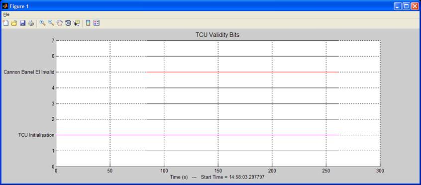

DataPlot Help File
Projects -
Creating / Loading / Saving
Figures -
Creating / Deleting / Loading / Saving
Pass2Mat - Converting Pass3200 files to DataPlot
format
DataPlot
is used to graphically represent data captured from a MIL-STD-1553 data bus.
General features of DataPlot:
Projects
On the
highest level you have Projects, a Project consist of a set of Figures all relating to a specific
topic / investigation / user requirement. For instance if you’re busy with an
investigation into all Weapons bus parameters related to Rocket firing, you
will have a project called rockets containing a lot of different Figures all
related to rocket firing.
Figures
A Figure is one axis system with a lot of user defined graphs. There are
two types of Figures:
·
Word Plot:
With a Word Plot Figure, its
is just a normal plot of the Data column of the parameter against the Time
column of the parameter. Any number of parameters can be plotted on the same
Figure with different colours, symbols or lines. The different parameters as
described by the user is displayed in a legend at the top right hand corner of
the Figure.
·
Bit Plot:
With a Bit Plot Figure, the graphs
are configured to only plot bits, with the bit names as labels on the Y-axis.
Any combination of bits from different words, and any amount of Bits can be
plotted. It is also possible to combine some bits to form more complex bit plots
Go to Quick Example
Enter a descriptive Title for the Figure that
will contain this set of graphs and click the OK button
Click on
the Add a Bit button. DataPlot will now bring up the data directory with all the
files in it, this makes it easier to select a parameter and takes the guess
work out of it.
Select a
filename from the available files and click on the Open button. DataPlot will now ask you to
select a specific bit from this parameter and to give it a description:
Once filled
in click on the OK button. You will
now see the parameter with the bit number and description as specified is
filled in on the parameter table to the right hand side of the DataPlot window
Click on
the Add All Bits button. DataPlot will once again bring up the SELECT
FILE window with all possible files / parameters in the Data directory.
Choose one an click on the Open button. (For this example I selected valtcu50)
This time
it won’t ask for descriptions or specific bits but will automatically add all
16 bits of the word since you have selected to Add All Bits. So the DataPlot
parameter
table will now look as follows:
Note that
under the Description column for the new added bits simply states the bit
number. At this stage it would be a good idea to click on the descriptions and
change them to proper descriptions instead of just bit numbers. Another thing
is that all graphs will be black, so for this exercise lets click change the description
and color of valtcu bit 5 to “Cannon Barrel El Invalid” and plotted in “Red”.
We also
want to delete Bits 8 to 15 because they will have no relevant data. To delete
a bit click on the specific cell in the Parameter column so that it is
highlighted and right click with the mouse. Deleting bit 8 for example:
Lets also
move the tcumode bit 6 down a bit, to do that click on
the tcumode cell and then click on the Down button to the left of the table a
couple of times until the tcumode bit is where you want it. Also change its clout to
Magenta
The DataPlot window will now look as follows:
Now click
on the Plot button at the left bottom side of the table.

A bit of a
boring plot since all of the bits stayed zero, but you get the idea. Note the
Labels on the left hand side corresponds to what you have entered in the
description column, look how the position of the bits correspond inversely with
the sequence in the DataPlot table. At the bottom of
the Figure the Start Time given is the actual Time stamp in the data files,
with the graph starting at 0 and showing time in seconds.
Here is an
example of what can be done with the Bit plot Figures having proper data and
using some of the complex features.
Now lets add another Figure to plot the angles of the cannon
barrel.
The DataPlot window will now look as follows:
The DataPlot window should now look like this:
Click on
the Plot button and we get the
following graph:
If we zoom
in on the graph you can now see the individual data points on the green plot
because we selected it to be plotted with the * symbol
To plot
both Figures, TCU Validity Bits and Cannon Angles, simultaneously click on
the Plot All button in the Project panel.
Start DataPlot.
Load the
Example Config File by clicking on the File dropdown menu, then selecting Load Project. Load the project file “Example”, this file should be in the
Example directory where the DataPlot tool has been installed.
Once the
Example project has been loaded, just fill in the following fields in DataPlot as follows;
The DataPlot tool should now look something like
this:
You can
start by clicking on the Plot All
button which will give you 4 plots showing the different kind of Figures.
By
selecting a specific Figure from the Figure
drop down box, have a look at how the Table is filled in for that Figure and by
clicking on the Plot button you will
only see that specific Figure
I guess I will have to add a New Project option under the File menu
– next release
See Loading & Saving
Creating a Figure
Deleting a Figure
Click on
the Figure drop down box and select <NEW>
Give an
appropriate Title for the new Figure and click on OK.
I you
choose yes, the Figure is deleted and can only be recovered if you have
previously saved this Project in which case you can just reload the Project.